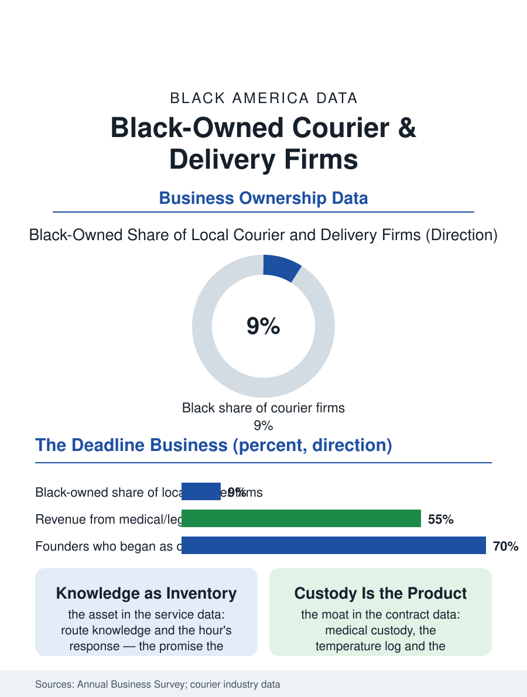

Black Business
The Deadline's Business: Black-Owned Courier Firms
The deadline converted into a routine by the drivers who incorporated their route knowledge. The courier file.

The courier and local delivery firm is the logistics economy's first mile in reverse: the same-day envelope, the medical specimen, the legal filing, and the auto part, moved by the firms the national networks' maps leave to the local specialist, a tier with a substantial Black ownership in the metro markets where the founders drove the routes before they owned them. The business census counts the local delivery firms in the thousands. This article reads the courier file.
The Route as the Asset
The firm's asset is the route knowledge and the response time, the promise the national carrier's hub cannot keep, the pickup in the hour and the delivery across the county by the court's deadline, a service whose value is the client's emergency priced by the minute. The founding pattern is the driver's own: the courier who learns which loading dock, which clerk, which building's freight elevator signs without the wait, incorporates with the van and the first account, in the pattern of the moving and the airport files' drivers-turned-owners, the gig era's driving having made the pattern's latest cohort in numbers the trade has not previously seen, the app driver's exit into the contracted route being the current founding story's standard form. The client file concentrates where the same-day need is structural: the law firms' filings and the title companies' documents in the paper era's long tail, the medical system's specimens and pharmaceuticals, whose chain of custody is the firm's license to operate in effect, the auto parts and the industrial supplies whose downtime prices the delivery, and the e-commerce era's overflow, the local firm as the platform's same-day subcontractor at the margin the dispatch files describe. The bicycle messenger's remnant in the downtown cores deserves the file's footnote, the fastest instrument in the gridlocked hour, employed by the same firms on the same deadlines, a tier whose riders are the trade's youngest workers and whose economics the app's bike fleets absorbed without absorbing the couriers' courthouse knowledge that remains the firm's.
Wheels, Insurance, and the Gig's Shadow
The firm's economics are the vehicle's: the fleet's fuel and maintenance, the insurance whose commercial rates price the driver's record, and the labor whose classification, employee against contractor, is the gig file's legal war fought in the courier industry a decade before the apps, the industry's own misclassification settlements being the case law the platforms later read. The established firm's defense against the app's price is the accountability the app's anonymity cannot offer, the named driver, the signed custody, the account manager who answers, sold to the clients whose cargo is the court filing and the blood specimen rather than the burrito. The medical courier tier is the file's growth and its moat: the laboratory and pharmacy contracts' compliance requirements, the temperature's log and the specimen's integrity, sort the firms by their systems, and the Black-owned firms of the metro markets hold a visible share of the tier in the trade's directories, their hospital relationships compounding in the pattern of the health business files' rooted contractors.
The Deadline's Business
The courier file closes on the deadline as the product, because the firm's whole existence is the conversion of the client's time panic into a routine, and its civic face is the process server's and the filing runner's knowledge of the courthouse's actual workings, a knowledge as local as the law itself. The drone and the locker and the autonomous van stand in the file's horizon in the vendors' demonstrations, aimed at the envelope's economics first, against which the firm's custody and accountability tiers are its stated defense. The census counts the local delivery firms in the thousands, the gig platforms' shadow across the category making the count the file's least reliable figure, the boundary between the firm and the fleet of contractors being the classification war's front line drawn through the census itself. The file's last entry is the envelope at the clerk's window at the deadline's minute, carried across the county by the firm whose founder learned the courthouse as a driver and owns it now as a route, the deadline met being the only advertisement the trade has ever needed, renewed daily at four o'clock.
More in Black Business
Black-Owned Businesses: Counts, Receipts, and the Representation Gap
About 161,000 Black-owned employer firms and three million solo ventures: how the Census Bureau counts Black business ownership, where firms concentrate, and the gap between population share and business share.
Black Median Net Worth: The Wealth Gap in Federal Reserve Data
The Federal Reserve puts Black median family net worth at $44,900, against $285,000 for White families — about 16 cents on the dollar. The widest gap in economic data.
Black Buying Power: The $1.8 Trillion Consumer Economy
Black buying power is estimated at about $1.8 trillion — larger than the economy of most nations. What the figure measures, who produces it, and what it buys.
Source: U.S. Census Bureau, Annual Business Survey for couriers and local messengers; Messenger Courier Association of America data.